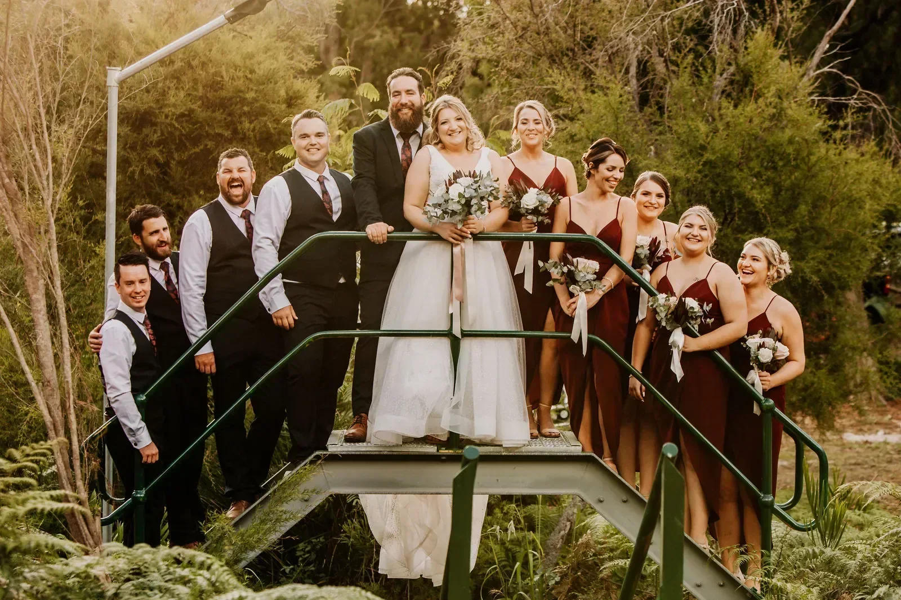
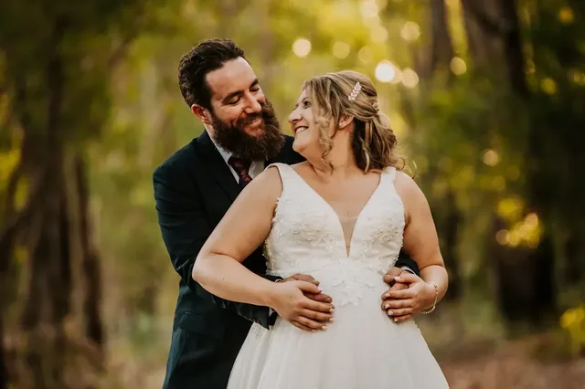
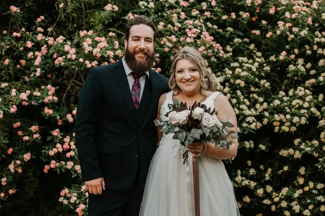
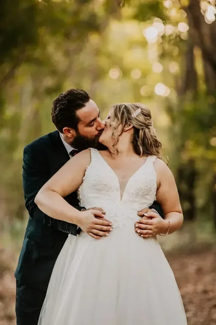
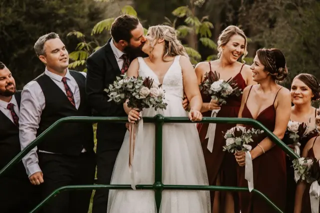
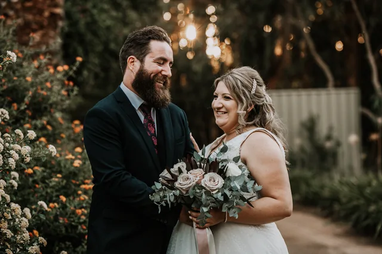
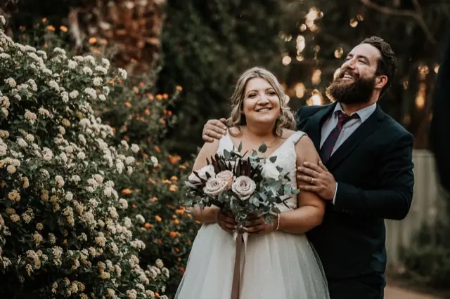
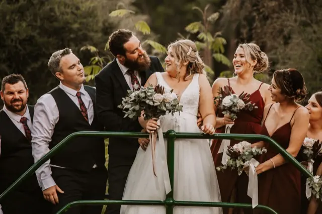
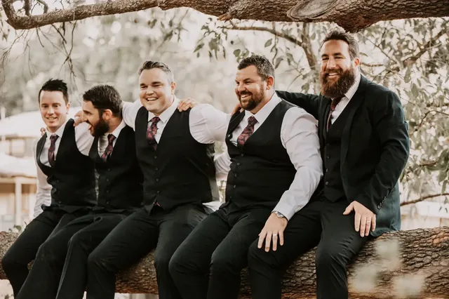
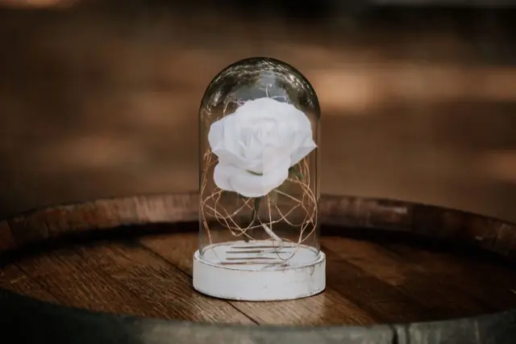

Perth Hills · Western Australia
Mundaring
wedding photographer
Melissa and Gavin had their wedding at a beautiful private property surrounded by Aussie bush and a variety of flowers.
Private-property weddings in the Hills are our favourite kind of problem. There's no venue coordinator and no established photo spots — so we walk the site beforehand and find them.
Bush light is contrasty and green, and it will wreck skin tones if it isn't handled properly. Getting warmth out of a Mundaring afternoon is a colour-grading job as much as a shooting one.
A private-property wedding has no venue coordinator, no established photo spots and no wet-weather room somebody else has already thought about. That work lands on you, and some of it lands on us. We walk the site before the day, find where the light will be at the times that matter, and pick the fallbacks — because on a private block there is no back-up room unless you hire one.
Power and light are the two that catch people out. A property that is beautiful at four in the afternoon can be genuinely dark by the time speeches start, and festoon lighting needs somewhere to plug in. It is worth deciding early whether you are running a generator, because it changes where the marquee goes, which changes where the dancing happens, which changes what we can photograph after sunset.
Mundaring sits about forty minutes east of the Perth CBD in the Hills proper. The bush there is jarrah and marri with granite underneath, and it changes character hard across the year — green and soft after winter rain, dry and golden by February. Both photograph well. They just do not photograph the same, which is worth knowing when you pick a date from a spreadsheet.
A real wedding here
Melissa & Gavin
Mundaring, Perth Hills











Getting married here?
We already know
the light
We've photographed at Mundaring and we shoot across the Perth Hills, Swan Valley and the coast every season. That means we're not working out your venue on the day — we're working out your family.
Eight photographers on the team means your date is rarely a problem, and there's always someone ready if plans change.
He captured our moments perfectly and all we had to do was enjoy our day! Would highly recommend Jesse.Nikki Moore
Good to know
Mundaring
questions we get asked
Can you photograph a wedding at a private property?
What is different about photographing a Perth Hills bush wedding?
How far is Mundaring from Perth?
What if there is no reception building on the property?

Let's check your date
Tell us when you're getting married at Mundaring. We'll come back within 24 hours.